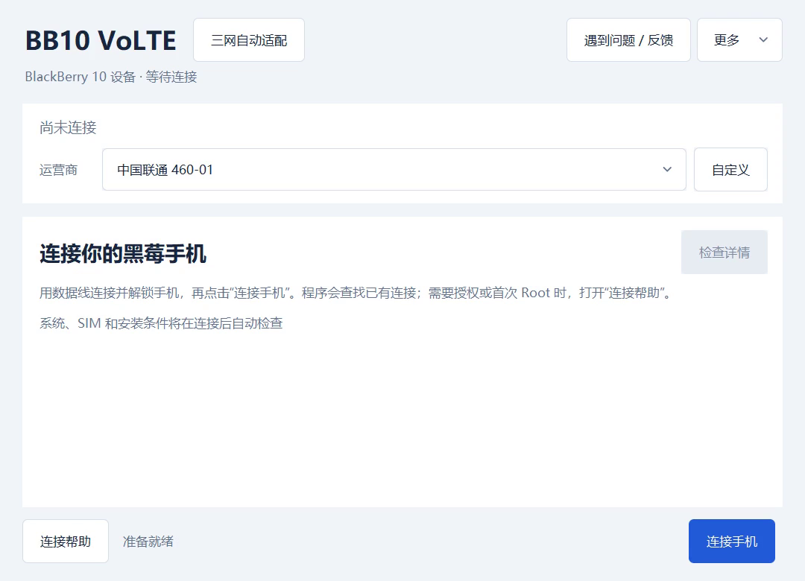
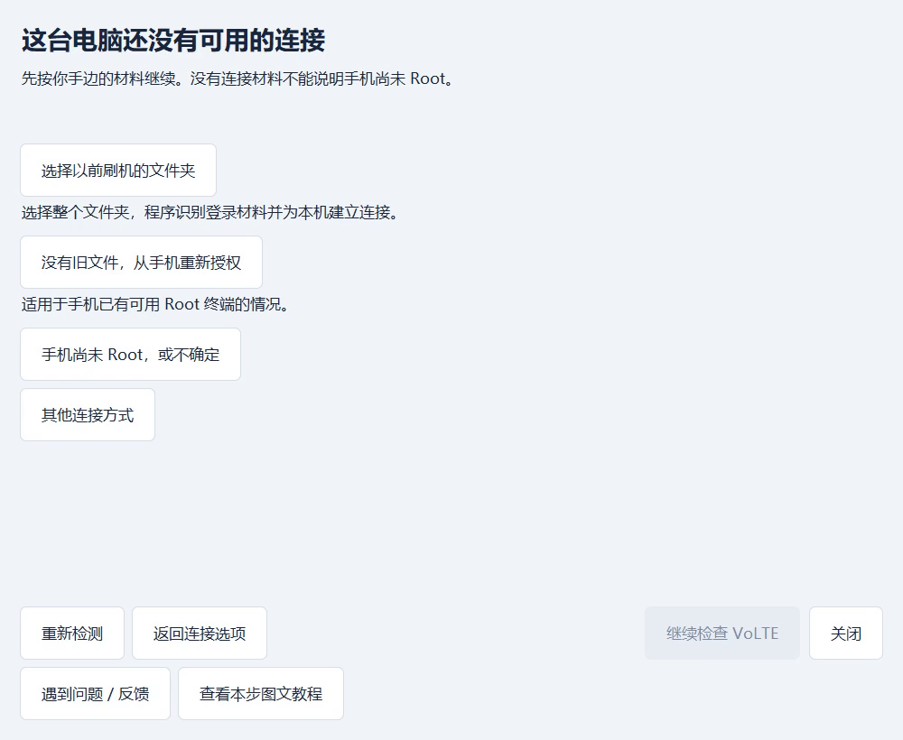
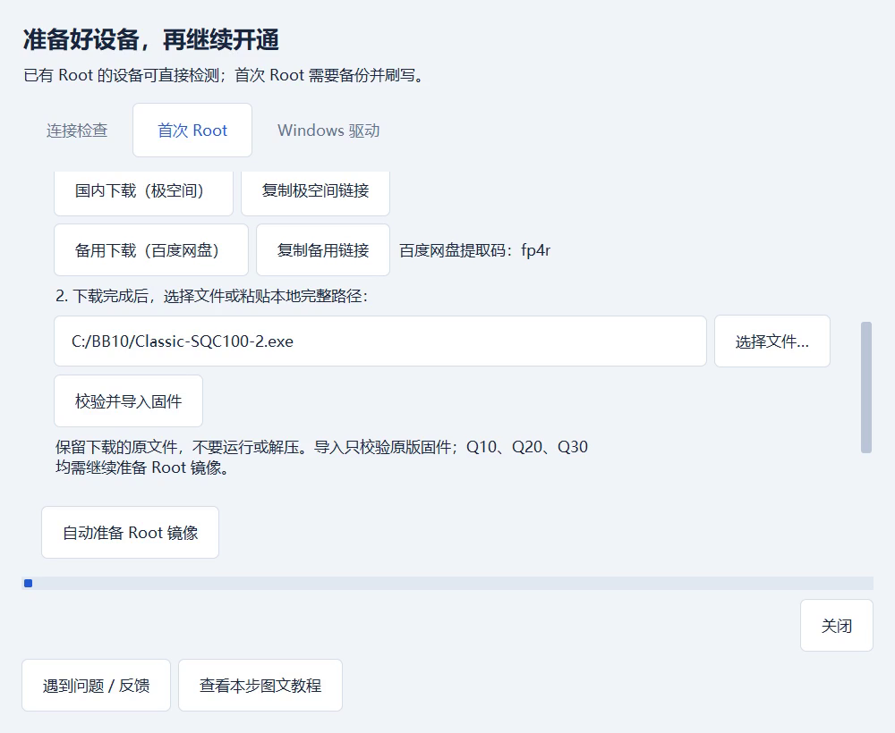
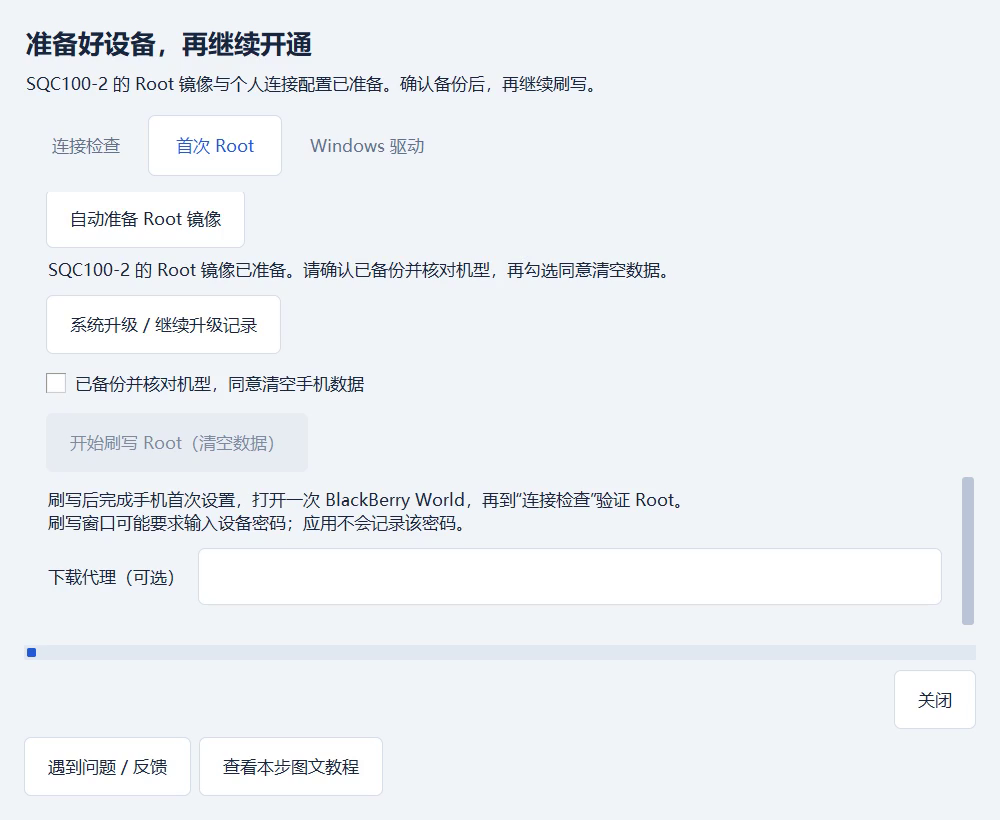
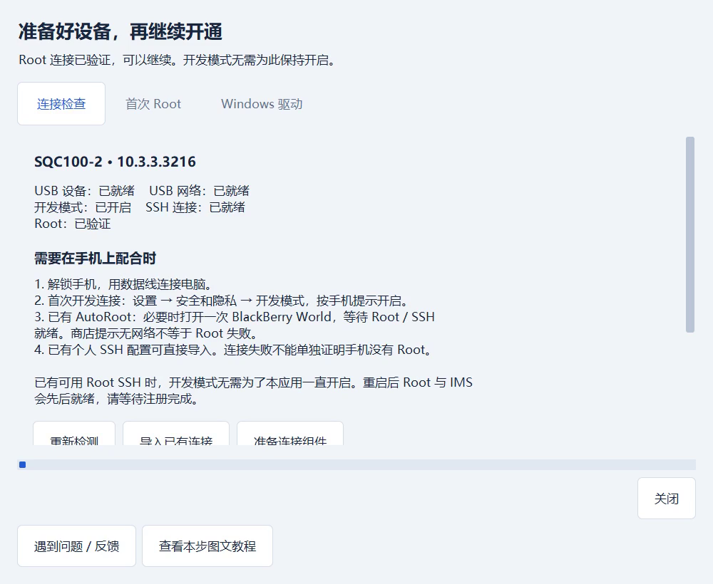
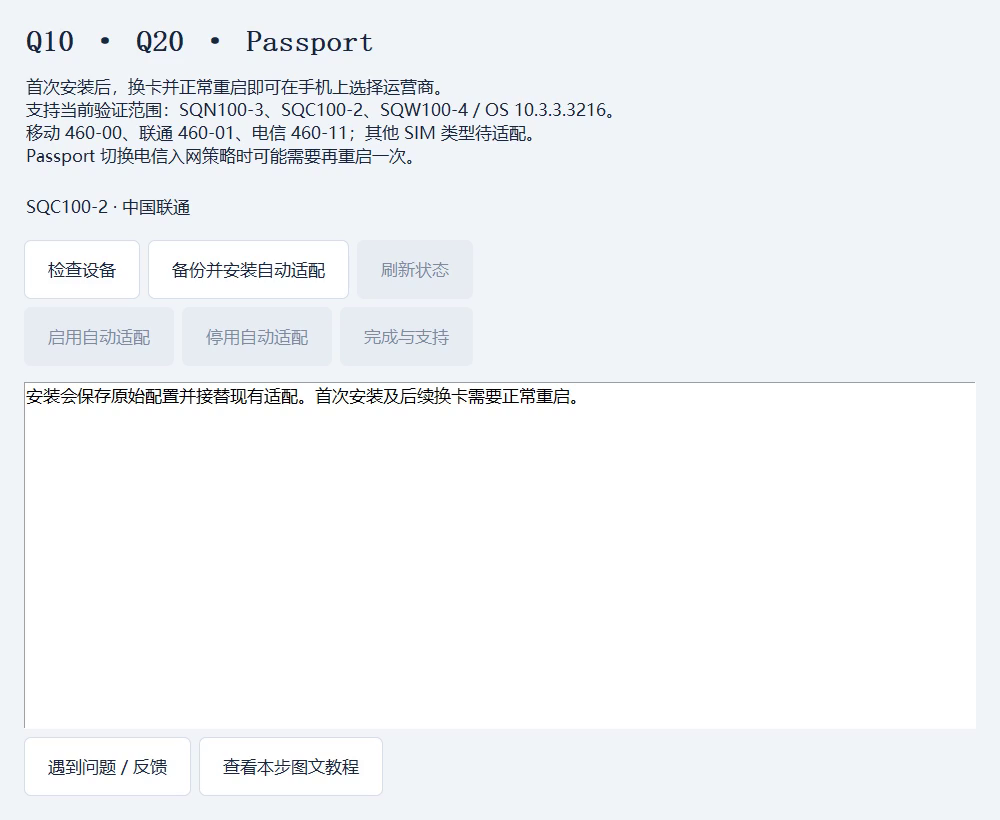
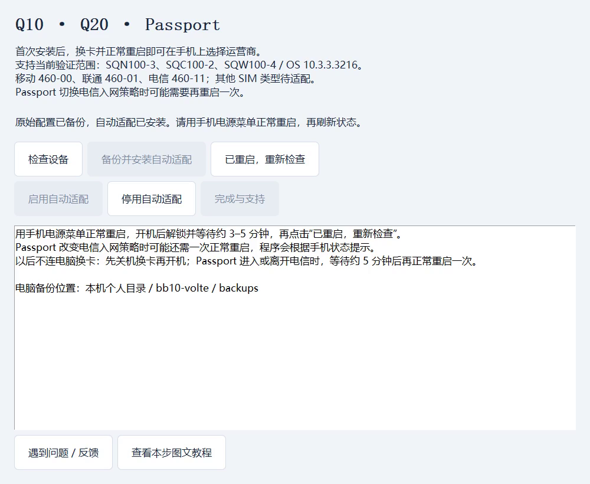
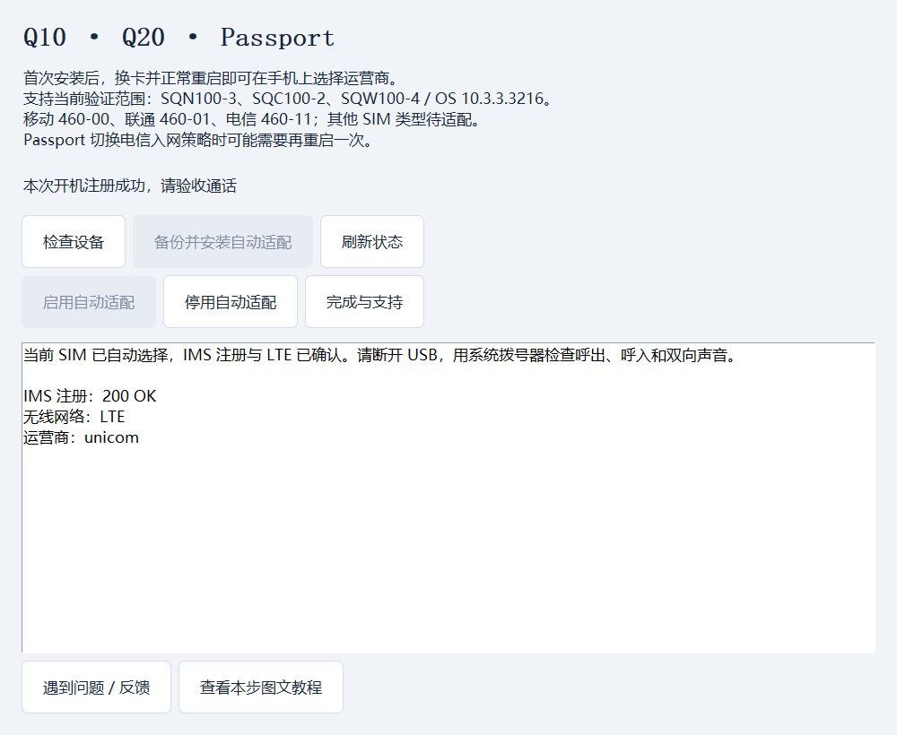
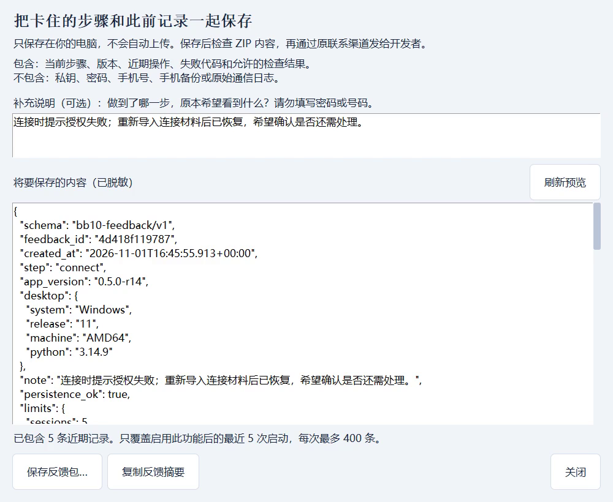

01 / 09
先备份，确认手机和电脑
先在手机“设置 → 关于”核对准确硬件型号与系统版本。当前验收范围是 Q10 SQN100-3、Q20 SQC100-2、Passport SQW100-4，OS 10.3.3.3216。只连接一台手机，保持电量充足。
这样做： 从官网获取适合电脑的完整安装包并核对 SHA-256。Windows 10/11 x64；Mac 首次 Root 准备另需 macOS 14+。首次 Root 会清空手机，先备份照片、联系人和文件，电脑至少留出 15 GB。

真实 Windows 界面，使用演示数据；点击可查看完整大图。
成功标志： 打开应用后看到“连接手机”和“三网自动适配”入口。已有有效 Root 的手机可以跳过首次刷写。
卡在这一步？
旧系统先走“系统升级”，约需 24 GB 空间；不要跨机型刷固件。Windows 未识别手机时再检查数据线和驱动。
查看如何保存反馈包
02 / 09
连接手机，按已有材料选路
用可传输数据的 USB 线连接并解锁手机，点击“连接手机”。首次开发连接按手机提示开启开发模式；已有可用 Root SSH 时无需一直开启。
这样做： 有旧刷机文件夹：选择整个文件夹。没有旧文件但手机已有有效 Root：选择“没有旧文件，从手机重新授权”。从未 Root 或不确定：选择对应入口，先核实状态。

真实 Windows 界面，使用演示数据；点击可查看完整大图。
成功标志： 检查完成后应显示手机型号、USB 网络与 Root 是否已验证。连接失败本身不能证明手机没有 Root。
卡在这一步？
提示授权失败时找回原材料或重新授权；提示连接服务未启动时，已有 AutoRoot 的手机可打开一次 BlackBerry World 等待。不要因连接失败就直接重刷。
查看如何保存反馈包
03 / 09
首次 Root：获取并导入对应固件
进入“首次使用与连接帮助 → 首次 Root”，确认检测到的准确型号。以下用 Q20 SQC100-2 演示，其他型号必须选择自己的固件。
这样做： 可以点击“下载对应机型固件”，也可以通过极空间或百度网盘下载。保留完整原文件，不运行、不解压；用“选择文件…”选中，再点“校验并导入固件”。

真实 Windows 界面，使用演示数据；点击可查看完整大图。
成功标志： 提示固件已导入并通过校验。这只完成了原版固件导入，还没有生成个人 Root 镜像。
卡在这一步？
下载中断可使用备用来源；导入不通过时核对机型、文件是否完整。不要改文件名或跳过校验。
查看如何保存反馈包
04 / 09
继续准备个人镜像，再确认刷写
固件导入成功后，向下滚动，点击“自动准备 Root 镜像”。程序还要补齐工具、生成个人连接材料，并构建、校验镜像。
这样做： 看到“Root 镜像已准备”后，再核对机型和备份，勾选“已备份并核对机型，同意清空手机数据”，点击“开始刷写 Root（清空数据）”，阅读第二次确认。保持 USB 稳定，按窗口提示配合。

真实 Windows 界面，使用演示数据；点击可查看完整大图。
成功标志： 只有镜像准备成功、当前设备型号匹配且完成清空确认后，刷写按钮才会可用。不要把“固件已导入”当成“可以刷写”。
卡在这一步？
按钮不可点时，先看它上方的原因。构建失败可导出反馈包；需要中断排查时保留镜像和准备记录，不要反复删除重建。
查看如何保存反馈包
05 / 09
完成手机设置，重新验证 Root
刷写结束后，在手机上完成首次设置，按该 Root 方案打开一次 BlackBerry World，再回电脑的“连接检查”。商店显示无网络不等于 Root 失败。
这样做： 点击“重新检测”，等待 USB、SSH 和 Root 检查完成。显示“Root 连接已验证”后继续检查 VoLTE。

真实 Windows 界面，使用演示数据；点击可查看完整大图。
成功标志： 准确型号、目标系统和有效 Root 均已确认。已有 Root 用户恢复连接后也从这里继续。
卡在这一步？
刚重启的手机要先解锁并等待服务启动。身份记录不匹配时核对这台手机的可信连接材料，不要忽略校验。
查看如何保存反馈包
06 / 09
检查设备，备份并安装三网适配
从主窗口进入“三网自动适配”，点击“检查设备”。核对当前手机、SIM 和运营商；使用已开通 VoLTE 的有效 USIM，并确保 LTE 数据正常。
这样做： 检查允许安装后，点击“备份并安装自动适配”。等待原始配置备份、下载校验、安装和回读完成，保留电脑备份。

真实 Windows 界面，使用演示数据；点击可查看完整大图。
成功标志： 出现“原始配置已备份，自动适配已安装”的提示及下一步重启说明。若提示需先启用，就先点“启用自动适配”。
卡在这一步？
安装中断或状态未知时先重新检查设备，不要直接重复覆盖安装。已有旧版本时按应用给出的停用、恢复、重启顺序更新。
查看如何保存反馈包
07 / 09
用手机菜单正常重启，再检查本次开机
在手机电源菜单选择正常重启。开机后解锁，等待约 3–5 分钟，保持 USB 连接。
这样做： 点击“已重启，重新检查”。如果 USB 连接尚未恢复，先点击“重新检查连接”，再读取当前状态。

真实 Windows 界面，使用演示数据；点击可查看完整大图。
成功标志： 应用确认本次开机的 SIM 选择、IMS 注册和 LTE。Passport 切入或离开电信入网策略时可能还需一次正常重启，按程序说明处理。
卡在这一步？
4G 图标不能代替注册检查，飞行模式不能代替正常重启。仍在等待时先看当前阶段说明，不要重新刷机或重复安装。
查看如何保存反馈包
08 / 09
拔掉 USB，验收真实双向通话
看到“本次开机注册成功”后，仍要在手机上验收真实通话。注册成功与通话成功是两项检查。
这样做： 拔掉 USB，用系统拨号器呼出，再让另一台手机回拨。每通从接通开始计时，屏幕达到 00:35 后再手动挂断。检查双方声音、全程 LTE、号码与运营商显示。

真实 Windows 界面，使用演示数据；点击可查看完整大图。
成功标志： 呼入、呼出都正常，双方都听得见，通话保持 LTE。以后换卡先正常关机，换卡后再开机并等待。
卡在这一步？
搜索网络、仅限紧急通话或首次拨号失败时保留现场，记录发生在哪一步并导出反馈。不要反复重拨、重装或重启。
查看如何保存反馈包
09 / 09
卡住时，保存一个能排查的反馈包
在当前页面点击“遇到问题 / 反馈”，写一句你做到哪一步、原本期待什么。入口在操作进行中也可使用。
这样做： 点击“刷新预览”检查内容，再点“保存反馈包…”。打开 ZIP 核对后，将整个文件通过原联系渠道发给开发者，或发至 octoooo@octoooo.com；应用不会自动发送。

真实 Windows 界面，使用演示数据；点击可查看完整大图。
成功标志： ZIP 包含当前步骤、版本、最近操作时间线、失败代码、允许的检查结果，以及可用的脱敏构建失败摘要。前一次失败不会因为重试成功而立即消失。
卡在这一步？
只覆盖启用该功能后的最近 5 次启动，每次最多 400 条。不会自动补回旧版日志，也不打包 private 目录、密钥、手机备份或原始 SIP 日志。不要在补充说明里填写密码或号码。
查看如何保存反馈包
Windows 驱动
只有电脑未识别手机或 USB 网络未就绪时，才进入“首次使用与连接帮助 → Windows 驱动”。日常使用不需要管理员权限；驱动安装会另行提示。
在这一步保存反馈
旧系统：先升级再 Root
选择“系统升级 / 继续升级记录”，按准确机型分阶段操作，遵守备份要求和每次清空确认。不要跨机型刷写。确认达到目标系统后，再继续 Root 与连接验证。
在这一步保存反馈
已有 Root，但连接材料丢失
选择“没有旧文件，从手机重新授权”。这条路径需要手机已有有效 Root 终端；依次按提示准备授权文件、转移到手机、执行完整授权命令，再验证手机身份和实际 Root。它不能替未 Root 的手机完成 Root。
在这一步保存反馈
其他硬件后缀：先确认能走哪条流程
按完整后缀查看、复制或下载给测试者的说明：每个候选型号都有独立步骤和反馈表，Passport 只读说明单独列出。
r15 新增 13 组手动候选、6 组 Passport 只读诊断，新增后缀尚未实机验收。自动适配仍限 SQN100-3、SQC100-2、SQW100-4；Root 配方存在不代表加载器或首刷已验证。
13 组手动、6 组只读；新增后缀均未实机验收| 完整硬件后缀 | 运营商 | 流程 |
|---|
| SQN100-1 / SQN100-5 | 电信 460-11 | 手动候选；需当地已有 LTE B5 数据 |
|---|
| SQC100-1 / SQC100-3 / SQC100-5 | 移动 460-00／联通 460-01／电信 460-11 | 手动候选 |
|---|
| SQC100-4 | 联通 460-01／电信 460-11 | 手动候选 |
|---|
| SQW100-1 / SQW100-3 | 上述三个运营商 | 只读检查；停止与恢复未验证，禁止安装 |
|---|
- 从“更多 → 候选机型本地试测”进入，选择完整后缀和实际运营商。需要已有有效 AutoRoot v4／Root SSH、OS 10.3.3.3216、六个原生文件匹配、无 ISIM 的指定 USIM、可用 LTE 数据及干净可恢复状态。
- 首次只读检查。手动候选通过后，明确勾选实验试用并重新检查；先安装，回读完成后再单独手动启动。自启动始终关闭。检查通过不代表通话成功。
- 仅手动候选启动后，使用系统拨号器和短信应用测试呼入、呼出、声音、LTE 和短信重复情况。Passport SQW100-1/-3 到检查导出为止，不安装、启动或执行停用恢复。停用并恢复后正常重启，导出检查报告、反馈 ZIP 和结果表。桌面端与手机版不能同时写入。
SQN100-2/-4 的本批国内组合、SQC100-4／移动、未核实的 SQW100-2、其他 MNC 与 ISIM 不开放本批试装。缺少 Root 材料、原生文件未知或恢复条件不满足时，不能靠勾选同意或套用其他型号镜像绕过。
完整试测说明与结果表
准备与风险
先在“设置 → 关于”核对准确硬件变体。三网自动适配适用于已 Root 的 Q10 SQN100-3、Q20 SQC100-2、Passport（Q30）SQW100-4，系统 10.3.3.3216，原生文件哈希必须匹配。
- 使用移动 460-00、联通 460-01、电信 460-11 的 USIM，无 ISIM；套餐已开通 VoLTE，LTE 数据正常。
- 首次安装需要稳定的 USB 数据线、本人 Root SSH 私钥和可信主机密钥。
- Windows 10/11 x64；Mac：Apple 芯片需 macOS 11+，Intel 需 macOS 10.15+。两者无需另装 Python。r14 已完成 Apple 芯片 Mac＋Q20 的首次 Root 原生链路及重启自启验收；Intel 未实机运行。
- 先备份手机。Q10、Q20、Passport 的首次 Root 准备约需 15 GB，旧系统升级需约 24 GB。应用按准确机型选择固件；刷写会清空数据。r14 已验收 Windows／Passport 与 Apple 芯片 Mac／Q20 的首次 Root 原生链路；完整首次使用 GUI、Q10 首次 Root、Intel 刷写和旧系统升级仍待验收，严禁跨机型刷写。
- 长期待机、漫游、其他地区及紧急呼叫尚未完整验证。
9 / 9 项功能验收通过 · 2026 年 11 月 1 日| 实测机型 | 中国移动 | 中国联通 | 中国电信 |
|---|
| Q10 SQN100-3 | 已支持 | 已支持 | 已支持 |
|---|
| Q20 SQC100-2 | 已支持 | 已支持 | 已支持 |
|---|
| Passport SQW100-4 | 已支持 | 已支持 | 已支持 |
|---|
最新版已支持以上九项组合。具体测试时间、版本和证据保留在验收记录中。
02 · 获取与启动
Windows / macOS 启动
不同 Release 支持的首次 Root 方法可能不同。未 Root 手机必须按下载版本的首次使用文档和实际机型操作。后续源码有新界面，不代表旧安装包也支持。
应用和手机服务准备好后，电脑离线也能使用。首次 Root 或安装驱动时，只有你主动进入并确认，才会下载缺少的材料。手机注册 IMS 和实际通话始终需要运营商网络。
03 · 建立可信连接
连接手机
- 先建立 USB 网络。用数据线连接并解锁手机。能充电或看到存储盘不等于 USB 网络已经就绪；拔插后如状态未更新，点击重新检查。不要预先安装旧 BlackBerry Link、随意改 IP 或降低主机密钥校验。
- 点击主界面的“连接手机”。应用会查找并实际验证已保存的个人连接；连接配置可以留空。旧
q10-root 与当前 bb10-root 别名均可匹配，自定义配置位于“更多 → 高级连接设置”。
- 需要处理时进入“连接帮助”。可选择以前刷机的整个文件夹，让应用识别其中唯一一组登录材料；确认来源后才建立本机配置。私钥应留在受保护的个人目录，不要发送到 Issue 或聊天群。
- 核对连接结果。确认型号、硬件变体、OS、Root 和现有服务状态。重新打开应用时只会复查上次成功的手机，不会因此自动安装或刷写。开发模式、SSH、Root 与 IMS 是不同层次；已有有效 Root SSH 时不必一直开启开发模式。
r14 已完成 Windows／Passport SQW100-4 与 Apple 芯片 Mac／Q20 SQC100-2 原生首次 Root、新密钥验证及正常重启自动启动；完整 GUI 首次使用、Q10 首刷和 Intel USB 刷写尚未验收。
r14 已启用短信关联修复：Q20／联通与 Passport／移动的短短信、两段长短信和两条同内容独立消息均正常，观察至少 3 分钟无重复；双向声音与 LTE 正常。其他组合短信尚未实测。
按手机现状选择恢复方式
- 已 Root，有本人的连接文件：导入自己的
ssh_config，同时确保它引用的登录私钥和可信 known_hosts 存在。Windows 的绝对路径不能原样搬到 Mac，应按应用的恢复连接流程补建。
- 已 Root，没有旧电脑文件：可通过手机已有的有效 Root 终端为这台电脑独立授权。严格按应用显示的编号和步骤传递公开脚本与结果，并在本人确认后输入
PAIR；这会持久追加手机 SSH 公钥。私钥始终留在电脑。
- 没有材料，也没有有效 Root 终端：不能直接连接。连接失败本身不代表手机未 Root，先确认 Root 和 SSH 状态，不要通过重刷猜测性修复。
- 主机指纹不符：核对该手机原有的可信材料。不要关闭严格主机校验，也不要把指纹变化直接当作密钥损坏。
确认尚未 Root 的 Q10／Q20／Passport：首次准备
- 进入“连接手机 / 连接帮助”的首次准备。检测 USB 网络；缺少 Windows 驱动时，由向导获取并校验固定材料，确认后通过 UAC 安装。
- 进入“首次 Root”，核对识别或选择的准确硬件变体，再次确认备份和约 15 GB 可用空间。
- 点击“自动准备 Root 镜像”。应用获取并校验固定工具与对应机型固件，生成这台手机独立的个人密钥和镜像。准备镜像本身不会刷写手机。
- 只有再次确认备份、实际机型并明确同意清空数据后，才进入刷写。出现未知退出、中断或未记录的错误时立即暂停并保留现场，不要盲目重试。
- 首次开机后完成必要设置，按原 Root 方法启动（可打开一次 BlackBerry World），再回应用验证有效 UID 0。Root 成功不等于 VoLTE 或通话已经通过。
旧 OS 先进入“系统升级”，确认清空后写入对应原版固件；开机读回 10.3.3.3216 后，再单独确认 Root。未知或较新系统不会自动刷写。已 Root 的支持机型可直接使用“三网自动适配”。
安装一次，以后换卡自动适配
- 连接并解锁一台已 Root 的支持机型，进入三网自动适配，核对准确型号和当前 SIM。
- 点击备份并安装自动适配。程序先保存并下载校验原始网络设置、开机入口和旧载荷，再写入新版本，最后逐文件回读校验。
- 用手机电源菜单正常重启、解锁，等待约 3–5 分钟，点击已重启，重新检查。程序确认本次开机、当前 SIM、原生 IMS 进程、注册和 LTE 后才显示成功。
- Passport 若显示还需一次正常重启，适配尚未完成，等待入网策略写入完成后再正常重启一次。飞行模式不能替代。界面会说明原因并保留重新检查按钮。
- USB 断线后重新连接并检查；重新打开应用会依据手机当前状态继续，无需重复安装。更新后若自动启动关闭，先按提示启用自动适配。
以后换卡：不再连接电脑
正常关机、更换 SIM，再开机并解锁，手机自动选择运营商。Passport 切入或离开电信入网策略时，先开机等待约 5 分钟，再正常重启一次。热插卡不在已验收流程内。
程序会核对机型、系统、原生文件哈希、备份回执及无通话状态；未知状态或独立修改冲突会停止写入。三网自动适配入口不执行首次 Root 刷写。
真实通话验收
- 确认本次开机注册成功后，拔掉 USB。
- 用系统拨号器呼出，再由另一台可正常通话的手机回拨。每通都等接通后的屏幕计时达到至少 00:35，再手动挂断。
- 核对首次呼出能否接通、双向声音、全程 LTE、自己的号码及运营商名称。
- 正常重启、关机换卡后，不连电脑再次测试。Q10 可先保持约 20 分钟 LTE 再拨号。
- 若出现搜索网络、仅限紧急通话或首次拨号失败，保留现场并导出脱敏报告，不要反复重拨、重装或重启。
九个机型／运营商组合已通过功能验收；其中六项包含不连电脑换卡，三项初始卡基线分别记录。部分手机环形日志已轮转，机主确认的时长与声音和保留完整的 SIP 计时分别标注。Q10 电信按最后一组成功通话验收；此前对端号码问题另记，本轮不判定首次呼出通过。
查看结构化验收证据
停用、恢复与升级
- 挂断所有电话并保持 USB，进入“三网自动适配”，使用该窗口的停止与恢复操作。
- 程序停止自己的管理器，从已校验备份恢复本项目管理的设置，并回读结果。随后正常重启，清除旧运行组件。
- 升级已识别的旧载荷时，清除后安装并校验新版、启用自动启动，再正常重启启动新版。Passport 如提示额外运营商重启，按说明完成。
保留原始备份和升级回执。恢复不会撤销 Root，也不会重刷固件。未知文件、缺失回执或独立修改冲突会停止；写入中断后先检查状态再处理。
07 · 运行之前
SHA-256 校验命令
从同一 Release 下载安装包和同名 .sha256 文件。以下命令假设安装包保存在当前用户的“Downloads / 下载”目录；路径不同时请换成实际完整路径。
Windows PowerShell
Get-FileHash "$HOME\Downloads\bb10-volte-0.5.0-r20-windows-x64.exe" -Algorithm SHA256
macOS 终端
shasum -a 256 "$HOME/Downloads/bb10-volte-0.5.0-r20-macos-universal.dmg"
命令会输出 64 位十六进制摘要，必须与 Release 同名校验文件中的 SHA-256 逐位一致（字母大小写不影响比较）。不要只看前几位。摘要不一致、文件来源不同或无法确认时，不要运行；删除后重新从 Release 下载。
08 · 保留证据，安全求助
遇到问题与导出脱敏报告
无法连接手机
依次检查解锁、数据线、USB 模式、USB 网络、SSH 和 Root，不要只凭能否充电判断。Mac 可核对“连接至 Mac”；Windows 首次驱动由向导处理。主机指纹变化时先核实可信材料，不关闭安全校验。
预检不通过或手机不能移动上网
阅读失败项的原因与建议，核对 SIM、LTE、实际 MCC/MNC、数据 APN 和原厂配置。手机无法正常移动上网时不要跳过安装条件，也不要把非默认配置直接认定为损坏。
注册待确认
保持现场，稍后查看状态并确认运营商服务。默认 180 秒观察结束不等于自动安装成功，也不应触发反复重装；只有真实通话清单全部通过才算本机验收。
安装中断或状态未知
保留安装记录和错误提示，重新预检、查看状态，然后联系维护者。不要删除事务记录、强行覆盖或重新 Root；私有安装记录不要直接公开上传。
导出并检查脱敏 JSON 报告
- 连接手机并重新执行一次检查，确保报告对应当前状态，然后打开“更多 → 导出检查报告”，将 JSON 保存到自己选择的位置。工具不会自动上传报告。
- 报告只保留允许的检查项、结果及必要的机型、系统、MCC/MNC 等信息，不包含完整 IMSI、IMEI、ICCID、PIN、手机号、SSH 密钥、主机地址、配置原文或原始 SIP 日志。
- 分享前仍要自行打开检查。确认自定义名称和附加文字中没有个人信息；不要额外上传
private 目录、私钥、ssh_config、known_hosts、私有安装记录或原始通信日志。
- 到项目 GitHub Issue 提交报告时，注明 最新版、Windows EXE 或 macOS DMG、电脑系统、手机型号与变体、完整 BB10 OS、运营商与使用地区、是否漫游或携号转网、失败阶段及错误提示。可用结果也请说明呼入、呼出、双向声音、全程 4G、拔 USB 和重启后的逐项结果。
前往 GitHub Issues 反馈可用或不可用结果
09 · 查阅原始说明
官方文档
本页适用于当前公开版本 最新版。仓库主分支可能已有新改动；下载包支持什么，以对应 Release 的附件和说明为准。